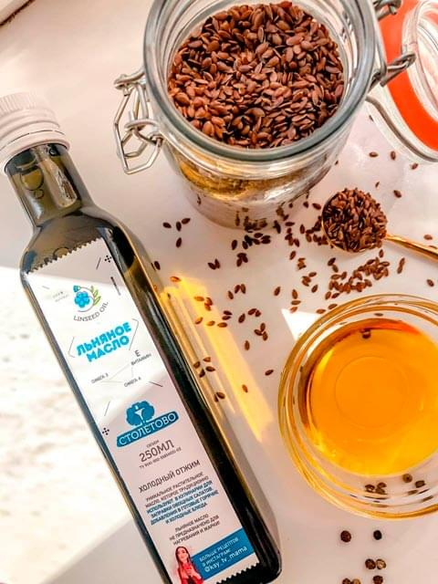
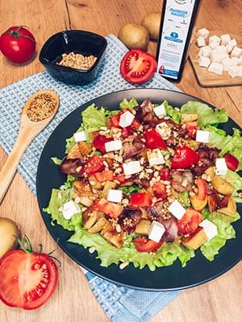
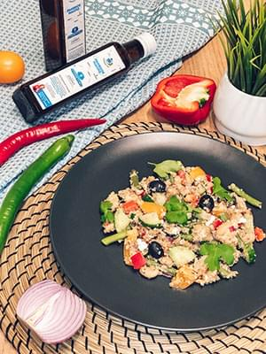

Рецепты блюд с льняным маслом холодного отжима
Подробнее

Масло семян льна обладает насыщенным вкусом и ароматом, поэтому его охотно добавляют как в
качестве одного из компонентов заправок для салата, так и в качестве самостоятельной
заправки. Льняным маслом заправляют и каши, благодаря чему они приобретают совершенно другой
вкус и становятся более сытными.
Картофельный салат с беконом, брынзой и льняным маслом.

Очень сытный и вкусный в теплом и холодном виде салат. Он может стать
прекрасным
полноценным обедом или ужином – в нем свежая зелень, помидор, сыр, бекон, и
много печеного картофеля, а пикантная заправка из льняного масла с зерновой
горчицей дополнит разнообразие вкусов.
Ингредиенты:
- Картофель - 400 гр
- Брынза - 50 гр
- Помидор - 2 шт
- Бекон сырокопчёный - 100 гр
- Листовой салат - 1 пучок
- Кедровые орешки - 2 ст.л
- Льняное масло - 3 ст.л
- Зерновая горчица - 1 ч.л
- Лимонный сок - 1 ч.л
- 1) Картофель нарезать кубиком, полить растительным маслом, посолить, добавить специи и запечь в духовке при 180°С до готовности (примерно 25 минут).
- 2) Кедровые орешки слегка обжарить на сухой сковороде. Бекон нарезать на кусочки и обжарить на сухой сковороде.
- 3) Брынзу нарезать кубиком. Помидоры нарезать кусочками.
- 4) Салатные листья тщательно вымыть, обсушить и при необходимости нарезать. Положить в салатник.
- 5) Приготовить заправку: льняное масло смешать с соком лимона и зерновой горчицей.
- 6) В салатник к листьям салата добавить все ингредиенты – картофель, бекон, орешки, помидоры, брынзу.
- 7) Полить салат заправкой, очень аккуратно перемешать и немедленно подавать к столу.
Киноа с овощами

Ингредиенты:
- На 1 стакан крупы киноа, 2 стакана воды, соль по вкусу
- Стручковая фасоль
- Белая фасоль
- Болгарский перец
- Помидоры (можно заменить Черри)
- Маслины без косточки
- Красный лук
- Огурец
- Сыр Фета( для веганов можно заменить на тофу)
- Льняное масло 3 ст.л
- Бальзамический уксус 1 ст.л
- Базилик 0,5 ч.л
- Орегано 0,5 ч.л
- Чеснок 1 долька
- Соль и перец по вкусу
- 1) Крупу киноа следует хорошо промыть. Залить холодной водой ( соотношение крупы и воды при варке 1:2). Когда вода закипит, добавить соль, варить крупу на среднем огне до полного исчезновения воды.
- 2) Овощи моем, чистим, нарезаем кубиком. Маслины нарезаем пополам.
- 3) Стручковую фасоль залить кипятком, и слить воду через 10 мин.
- 4) Белую фасоль промыть под проточной водой.
- 5) Смешать ингредиенты для заправки.
- 6) В салатнике смешать киноа с овощами , полить заправкой и перемешать.
- 7) Выложить на блюдо , украсить зеленью и подавать.